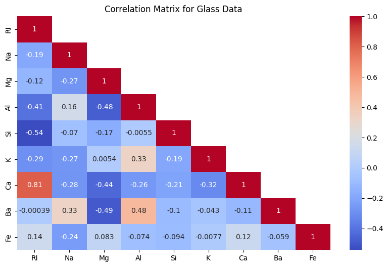
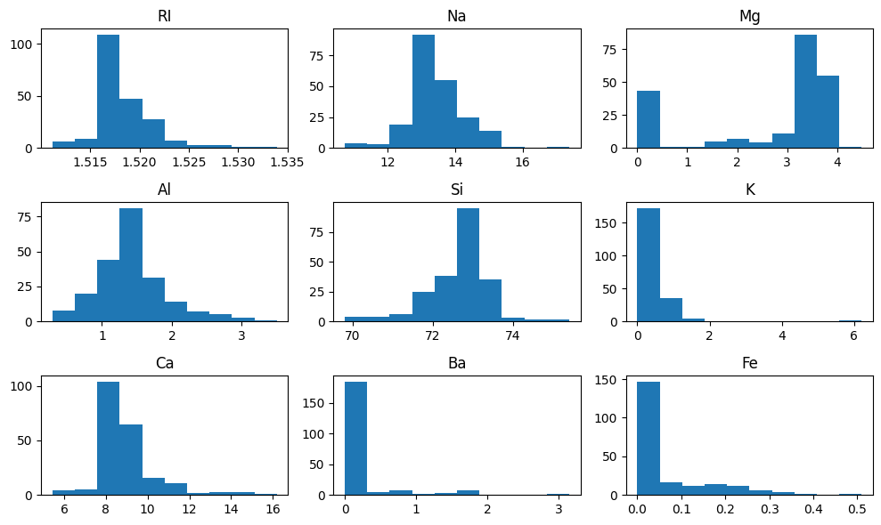
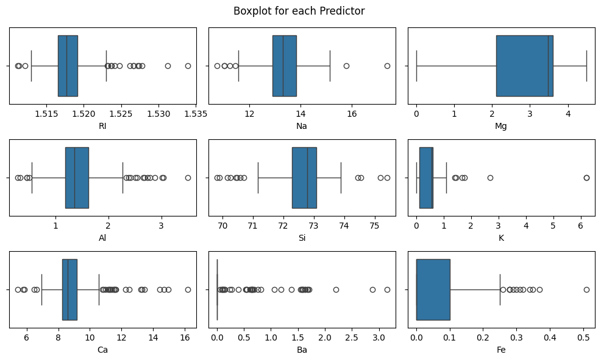
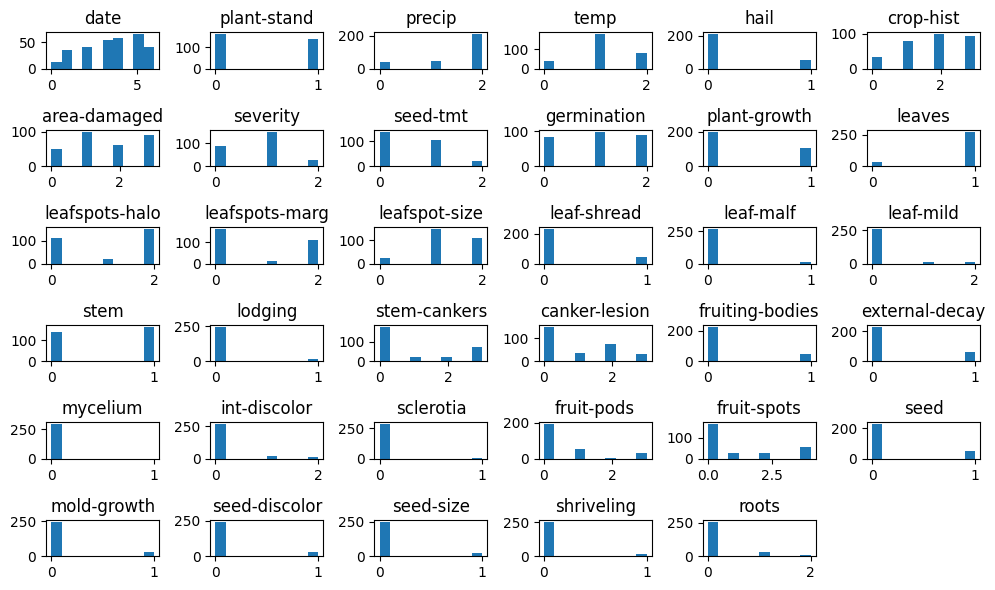

kaggle.api.authenticate()
kaggle.api.dataset_download_files('uciml/glass', path='./', unzip=True)Homework 3
KJ Chapter 3: Data Preprocessing
Exercise 1
The UC Irvine Machine Learning Repository6 contains a data set related to glass identification. The data consist of 214 glass samples labeled as one of seven class categories. There are nine predictors, including the refractive index and percentages of eight elements: Na, Mg, Al, Si, K, Ca, Ba, and Fe. The data can be accessed via:
df_glass = pd.read_csv('glass.csv')
df_glass| RI | Na | Mg | Al | Si | K | Ca | Ba | Fe | Type | |
|---|---|---|---|---|---|---|---|---|---|---|
| 0 | 1.52101 | 13.64 | 4.49 | 1.10 | 71.78 | 0.06 | 8.75 | 0.00 | 0.0 | 1 |
| 1 | 1.51761 | 13.89 | 3.60 | 1.36 | 72.73 | 0.48 | 7.83 | 0.00 | 0.0 | 1 |
| 2 | 1.51618 | 13.53 | 3.55 | 1.54 | 72.99 | 0.39 | 7.78 | 0.00 | 0.0 | 1 |
| 3 | 1.51766 | 13.21 | 3.69 | 1.29 | 72.61 | 0.57 | 8.22 | 0.00 | 0.0 | 1 |
| 4 | 1.51742 | 13.27 | 3.62 | 1.24 | 73.08 | 0.55 | 8.07 | 0.00 | 0.0 | 1 |
| ... | ... | ... | ... | ... | ... | ... | ... | ... | ... | ... |
| 209 | 1.51623 | 14.14 | 0.00 | 2.88 | 72.61 | 0.08 | 9.18 | 1.06 | 0.0 | 7 |
| 210 | 1.51685 | 14.92 | 0.00 | 1.99 | 73.06 | 0.00 | 8.40 | 1.59 | 0.0 | 7 |
| 211 | 1.52065 | 14.36 | 0.00 | 2.02 | 73.42 | 0.00 | 8.44 | 1.64 | 0.0 | 7 |
| 212 | 1.51651 | 14.38 | 0.00 | 1.94 | 73.61 | 0.00 | 8.48 | 1.57 | 0.0 | 7 |
| 213 | 1.51711 | 14.23 | 0.00 | 2.08 | 73.36 | 0.00 | 8.62 | 1.67 | 0.0 | 7 |
214 rows × 10 columns
X = df_glass.drop(['Type'], axis = 1)
y = df_glass.TypePart A
Using visualizations, explore the predictor variables to understand their distributions as well as the relationships between predictors.
# calc corr between predictors
correlation_matrix = X.corr()
mask = np.triu(correlation_matrix) # halves the matrix
np.fill_diagonal(mask, False) # shows the diagonal
sns.heatmap(correlation_matrix, cmap = 'coolwarm', annot=True, mask = mask ).set_title('Correlation Matrix for Glass Data')
plt.show()
df_glass.describe().T # transpose it since its easier to view this way| count | mean | std | min | 25% | 50% | 75% | max | |
|---|---|---|---|---|---|---|---|---|
| RI | 214.0 | 1.518365 | 0.003037 | 1.51115 | 1.516522 | 1.51768 | 1.519157 | 1.53393 |
| Na | 214.0 | 13.407850 | 0.816604 | 10.73000 | 12.907500 | 13.30000 | 13.825000 | 17.38000 |
| Mg | 214.0 | 2.684533 | 1.442408 | 0.00000 | 2.115000 | 3.48000 | 3.600000 | 4.49000 |
| Al | 214.0 | 1.444907 | 0.499270 | 0.29000 | 1.190000 | 1.36000 | 1.630000 | 3.50000 |
| Si | 214.0 | 72.650935 | 0.774546 | 69.81000 | 72.280000 | 72.79000 | 73.087500 | 75.41000 |
| K | 214.0 | 0.497056 | 0.652192 | 0.00000 | 0.122500 | 0.55500 | 0.610000 | 6.21000 |
| Ca | 214.0 | 8.956963 | 1.423153 | 5.43000 | 8.240000 | 8.60000 | 9.172500 | 16.19000 |
| Ba | 214.0 | 0.175047 | 0.497219 | 0.00000 | 0.000000 | 0.00000 | 0.000000 | 3.15000 |
| Fe | 214.0 | 0.057009 | 0.097439 | 0.00000 | 0.000000 | 0.00000 | 0.100000 | 0.51000 |
| Type | 214.0 | 2.780374 | 2.103739 | 1.00000 | 1.000000 | 2.00000 | 3.000000 | 7.00000 |
X.hist(grid=False)
plt.tight_layout()
plt.show()
fig, ax = plt.subplots(nrows=3, ncols=3)
for i, col in enumerate(X.columns):
sns.boxplot(x=col, data=X, ax=ax.flatten()[i])
fig.suptitle('Boxplot for each Predictor')
plt.tight_layout()
plt.show() 
Part B
Do there appear to be any outliers in the data? Are any predictors skewed?
If we consider data outside the IQR, then almost all predictors have outlier with the expection of Mg column having no visuable outliers. The column with the most outliers seems to be Ba suggests that Barium is not a common ingredient in glass while the amount of magnesiumn found in glass fairly common. Moreover, another method to detect outliers that I like to use is z-scores where we consider a datapoint to be an outliers if it is more than 1.96 standard deviations away from the mean since that should capture 95% of the data.
All of the predictors are skewed albeit some are more skewed than others. For instance, K,Ba and Fe looks more like a poisson distribution with a low-value lambda.
Part C
Are there any relevant transformations of one or more predictors that might improve the classification model?
Some transformations we might use to improve the classification model is a log transform so that the distribution resembles normality. Specifically for models that assume normal data such as a linear regression. Another transformation, I would suggest is to standardize the predictors where their scales are from -1 to 1 or normalize the scale from 0-1 which works better for the task.
Exercise 2
The soybean data can also be found at the UC Irvine Machine Learning Repository. Data were collected to predict disease in 683 soybeans. The 35 predictors are mostly categorical and include information on the environmental conditions (e.g., temperature, precipitation) and plant conditions (e.g., left spots, mold growth). The outcome labels consist of 19 distinct classes.
from ucimlrepo import fetch_ucirepo
soybean_large = fetch_ucirepo(id=90)
X = soybean_large.data.features
y = soybean_large.data.targets X.head()| date | plant-stand | precip | temp | hail | ... | mold-growth | seed-discolor | seed-size | shriveling | roots | |
|---|---|---|---|---|---|---|---|---|---|---|---|
| 0 | 6.0 | 0.0 | 2.0 | 1.0 | 0.0 | ... | 0.0 | 0.0 | 0.0 | 0.0 | 0.0 |
| 1 | 4.0 | 0.0 | 2.0 | 1.0 | 0.0 | ... | 0.0 | 0.0 | 0.0 | 0.0 | 0.0 |
| 2 | 3.0 | 0.0 | 2.0 | 1.0 | 0.0 | ... | 0.0 | 0.0 | 0.0 | 0.0 | 0.0 |
| 3 | 3.0 | 0.0 | 2.0 | 1.0 | 0.0 | ... | 0.0 | 0.0 | 0.0 | 0.0 | 0.0 |
| 4 | 6.0 | 0.0 | 2.0 | 1.0 | 0.0 | ... | 0.0 | 0.0 | 0.0 | 0.0 | 0.0 |
5 rows × 35 columns
X.shape(307, 35)y.nunique()class 19
dtype: int64Making sure the correct dataset is loaded. It seems the data from UC Irvine has less observations from the data in the R library mlbench
Part A
Investigate the frequency distributions for the categorical predictors. Are any of the distributions degenerate in the ways discussed earlier in this chapter?
X.hist(grid=False)
plt.tight_layout()
plt.show()
X.mycelium.value_counts()mycelium
0.0 294
1.0 2
Name: count, dtype: int64X.mycelium.var()0.006733852496564359While there no predictors will a 100% denegerate distribution, there are definitely a lot of predictors that are very close to denegerate distribution just to name a few: mycelium is the closes to a complete degenerate distribution, and other like seed-size, shriveling, and sclerotia.
Part B
Part C
Develop a strategy for handling missing data, either by eliminating predictors or imputation.
We would consider completely removing the 2-3 classes with the most missing values because we suspect that the missing was due to errors in data collection. While for rest of the missing values, we suggest employ a combination of imputation techiniques in a way it mitigates its impact on the ditribution of each predictor and the quality of the predictions after model training.